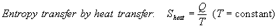
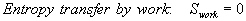
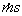
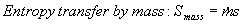
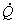
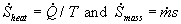
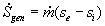
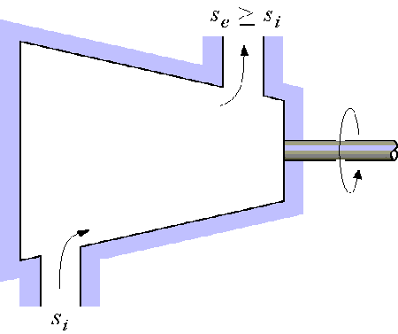
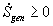

MODULE 15: GENERAL BALANCE OF ENTROPY
(fragments of the CD that comes with
Cengel&Boles's book "Thermodynamics", 3-d edition, McGraw-Hill,
1998)
Class notes
Entropy Balance
The principle of increase of entropy for
any system is expressed as
The entropy balance relation can be stated as: the entropy change of a system during a process is equal to the net entropy transfer through the system boundary and the entropy generated within the system as a result of irreversibilities.
Entropy change of a system
The entropy change of a system is the result of the process occurring within the system.
Entropy change = Entropy at final state – Entropy at initial state
Mechanisms of Entropy Transfer, Sin and Sout
Entropy can be transferred to or from a system by two mechanisms: heat transfer and mass flow. Entropy transfer occurs at the system boundary as it crosses the boundary, and it represents the entropy gained or lost by a system during the process. The only form of entropy interaction associated with a closed system is heat transfer, and thus the entropy transfer for an adiabatic closed system is zero.
Heat Transfer
The ratio of the heat transfer Q at a location to the absolute temperature T at that location is called the entropy flow or entropy transfer and is given as

Q/T represents the entropy transfer accompanied by heat transfer, and the direction of entropy transfer is the same as the direction of heat transfer since the absolute temperature T is always a positive quantity.
When the temperature is not constant, the entropy transfer for process 1-2 can be determined by integration (or by summation if appropriate) as
Work
Work is entropy-free, and no entropy is transferred by work. Energy is transferred by both work and heat, whereas entropy is transferred only by heat.

Mass flow
Mass contains entropy as well as energy, and the entropy and energy contents of a system are proportional to the mass. When a mass in the amount m enters of leaves a system, entropy in the amount of 
, where s is the specific entropy of the mass.

Entropy Generation, Sgen
Irreversibilities such as friction, mixing, chemical reactions, heat transfer through a finite temperature difference, unrestrained expansion, non-quasiequilibrium expansion, or compression always cause the entropy of a system to increase, and entropy generation is a measure of the entropy created by such effects during a process.
For a reversible process, the entropy generation is zero and the entropy change of a system is equal to the entropy transfer. The entropy transfer by heat is zero for and adiabatic system and the entropy transfer by mass is zero for a closed system.
The entropy balance for any system undergoing any process can be expressed in the general form as
The entropy balance for any system undergoing any process can be expressed in the general rate form, as
where the rates of entropy transfer by heat transferred at a rate of 
and mass flowing at a rate of  are
are 
.
The entropy balance can also be expressed on a unit-mass bais as
The term Sgen is the entropy generation within the system boundary only, and not the entropy generation that may occur outside the system boundary during the process as a result of external irreversibilities. Sgen = 0 for the internally reversible process, but not necessarily zero for the total process. The total entropy generated during any process is obtained by applying the entropy balance to a System that contains the system itself and its immediate surroundings.
Closed Systems
Taking the positive direction of heat transfer to the system to be positive, the general entropy balance for the closed system is
For an adiabatic process (Q = 0) this reduces to
For a general closed system and its surroundings ( an isolated system) can be treated as an adiabatic system, and the entropy balance becomes
Control Volumes
The entropy balance for control volumes differs from that for closed systems in that the entropy exchange due to mass flow must be included.
In the rate form we have
This entropy balance relation is stated as: the rate of entropy change within the control volume during a process is equal to the sum of the rate of entropy transfer through the control volume boundary by heat transfer, the net rate of entropy transfer into the control volume by mass flow, and the rate of entropy generation within the boundaries of the control volume as a result of irreversibilities.
For a general steady-flow process the entropy balance simplifies by setting  to
to
For a single-stream (one inlet and one exit) steady-flow device, the entropy balance becomes
For an adiabatic single-stream device, the entropy balance becomes


This states that the specific entropy of the fluid must increase as it flows through an adiabatic device since 
. If the flow through the device is reversible and adiabatic, then the entropy will remain constant regardless of the changes in other properties.
Therefore for steady-flow, single-stream, adiabatic and reversible process: